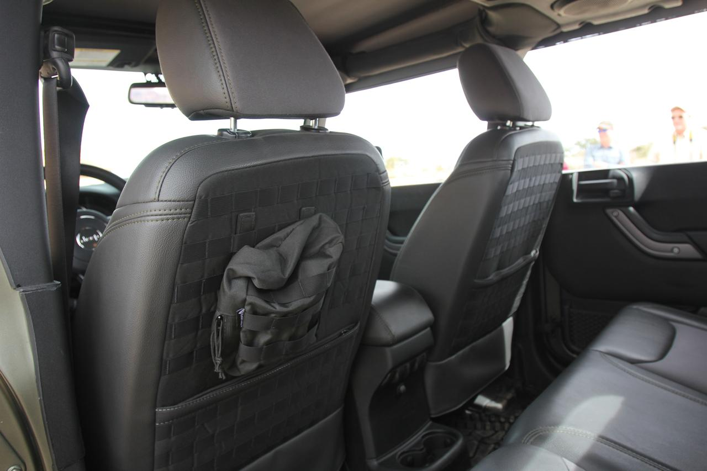
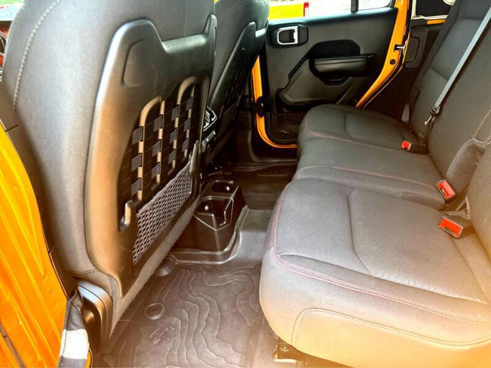

Everything you need to know before you buy — fitment by generation, material comparison, and where to find the best options.
Seat covers are one of the highest-impact upgrades you can make to a Jeep Wrangler — but getting the right fit depends heavily on which generation you own. This guide covers every Wrangler generation from the YJ through the current JL and Gladiator JT, what makes each one different for seat cover fitment, and the materials worth considering.
Not all Wrangler seats are interchangeable. Airbag compatibility, headrest design, seat width, and mounting points vary significantly across generations. Here's what you need to know for each.
The square-headlight Wrangler features the narrowest seats of any generation. Seat cover options are more limited than for later models, and universal-fit covers are often the only practical choice. No airbags to worry about.
The round-headlight TJ brought a coil-spring suspension and a slightly wider interior. No side airbags on any trim, so installation is straightforward. Many covers designed for TJ will also fit the LJ.
The LJ Unlimited stretched the TJ wheelbase to 104 inches for a rear jump seat, but the front seats are identical to the standard TJ. Covers listed for "TJ" will fit the LJ front seats without modification.
The JK was the first four-door Wrangler (JKU) and introduced a notably wider, more car-like interior. It also marked the first time Jeep added adjustable headrests to the Wrangler — a meaningful safety and comfort upgrade over the fixed headrests on the TJ. Pre-facelift interiors have slightly different seat contours than the 2011+ refresh. Side airbags (SAB) were optional on some trims — check your specific build.
Jeep refreshed the JK interior in 2011 with revised seat bolstering and updated dashboard textures. Sahara and Rubicon trims often came with standard SAB — critical for cover selection. This is the most popular generation for aftermarket accessories due to production volume.
The current generation JL brought a completely redesigned interior with standard side airbags across most trims. Every JL seat cover must be airbag-safe — non-SAB covers are a serious safety concern here. Rubicon and select trims also came with factory MOLLE seat backs from 2018–2023. The JL also introduced a 4xe plug-in hybrid variant with the same seat specifications.
The Gladiator pickup truck shares its front seat design with the JL Wrangler. JL-spec front seat covers will generally fit the Gladiator without modification. Rear seats differ — the Gladiator has a flat rear bench rather than the JL's fold-forward design.
Beyond generation differences, Jeep has steadily upgraded seating options across trims — particularly on the JL. Here's how the interior has evolved from base Sport to the flagship 392.
Cloth low-back bucket seats with 6-way manual adjustment for the driver and 4-way manual for the passenger. Functional and durable, but minimal bolstering and no lumbar support beyond basic manual adjustment. Fine for daily driving; less ideal for long trail days where lateral support matters.
The Sahara trim elevated the JL interior significantly — available leather-trimmed seats, heated front seats, and eventually available power-adjustable driver's seat. More car-like than the Rubicon's utility focus. A good balance of comfort and practicality for owners who split time between the street and the trail.
The Rubicon sits between comfort and capability. Heated front seats standard on most years, available leather, and — from 2018 through 2023 — the factory MOLLE seat backs as a defining feature of the trim. Seat covers here must accommodate the MOLLE webbing or be designed to fit over it without blocking the attachment points.
Introduced in 2021 as Jeep's high-speed desert runner, the Mojave brought unique interior touches including larger, more aggressively bolstered front seats designed to keep occupants planted over rough terrain at speed. Notably, the Mojave did not include the factory MOLLE seat backs — a deliberate design choice for the high-speed desert focus. Seat cover fitment follows JL specs but the bolster profile differs from Rubicon seats.
The V8-powered 392 sits at the top of the Wrangler lineup and brought the most premium seating Jeep has ever offered in a Wrangler: heated and ventilated front seats, power-adjustable driver's seat, and available leather upholstery. Like the Mojave, the 392 did not include factory MOLLE seat backs — and like the Mojave, seat covers must be verified for fitment due to the more pronounced bolster design.
The 4xe plug-in hybrid shares its seating with the equivalent JL trim it's based on — Sahara 4xe or Rubicon 4xe. Seat specs follow the respective JL trim, so cover fitment is the same. The one distinction: Rubicon 4xe models did include the factory MOLLE seat backs through 2023, same as the standard Rubicon.
The evolution of Wrangler seats tracks closely with the evolution of the Jeep itself: from spartan utility to genuine enthusiast gear. Here's the story, told straight.
If you've ever wondered why the factory MOLLE seat backs on JL Wranglers and Gladiators feel oddly familiar — or why 2024 Wranglers don't have them anymore — here's the full picture.
Early Wrangler interiors were unapologetically bare. YJ seats (1987–1995) were narrow, vinyl-trimmed, and built for function over comfort — fixed headrests, no lumbar, no heat, no adjustment beyond basic fore/aft. The TJ generation (1997–2006) improved bolstering and introduced softer materials, but remained equally spartan on features: still fixed headrests, still no heating, still no lumbar support worth mentioning. The interior prioritized durability and washability over refinement, and the aftermarket hadn't yet treated Wrangler interiors as a serious accessory category.
The JK was the first Wrangler to feel genuinely car-like inside. Wider seats, better materials, and a four-door JKU layout changed who was buying Wranglers — and what they expected. Key seat upgrades introduced with the JK:
The JK's production run of over a decade made it the most accessorized Wrangler in history. This is when the aftermarket for quality seat covers genuinely exploded.
Around 2011, Bartact entered the retail market with what would become a category-defining product: tactical seat covers with genuine mil-spec MOLLE/PALS webbing built into the seat backs. Not decorative stitching — actual load-rated MOLLE webbing engineered to the same standard used in military gear. For the first time, Wrangler owners could mount pouches, first-aid kits, hydration carriers, and trail gear directly to the backs of their front seats. The idea resonated immediately with the off-road and overlanding community.

At the 50th Easter Jeep Safari in Moab, Utah — a landmark event that also celebrated Jeep's 75th anniversary — Jeep unveiled seven concept vehicles that captured the imagination of the enthusiast community. The star of the show for tactical Jeep fans was the Crew Chief 715, a tribute to the legendary Kaiser M715 military truck. Its interior told the real story: both front seat backs were fitted with Bartact MOLLE webbing and pouches — functional, load-rated mil-spec gear attachment right there on a Jeep concept at the most prominent Jeep event in the world.

The all-new JL Wrangler launched in 2018 with the most significant seat upgrade in Wrangler history — for better and worse. On the positive side:
Then there's the downside — one that the Wrangler community has complained about since day one: the elastic cargo nets on the bottom of the plastic seat back panels. Introduced with the JL in 2018 and inexplicably still present today, these flimsy nets are notorious for sagging within months of use, drooping awkwardly behind the front seats and collecting debris while looking like an afterthought. And it doesn't stop there — Jeep ran the same playbook on the doors, where identical elastic nets on the door panels sag just as badly and serve equally little purpose. Out of every single change Jeep has made to Wrangler interiors, the community's near-universal opinion is that these nets — on the seats and the doors — should have been replaced with something better years ago. They remain one of the most baffling persistent design choices on an otherwise constantly-improving platform.
Despite that, the MOLLE seat backs were a genuine win. When the Gladiator JT followed in 2020, it carried the same factory MOLLE setup on Rubicon trims — a direct acknowledgment of what the off-road aftermarket, led by companies like Bartact, had shown consumers genuinely wanted.
Starting with the 2024 model year, Jeep quietly removed the factory MOLLE seat backs from their Wrangler and Gladiator lineup — no announcement, no explanation. A change that caught many buyers off-guard and sparked significant discussion in the community.
Here's what most 2024+ owners don't know: the OEM MOLLE seat back panels are still available as a Mopar part. The front seat back panel with built-in MOLLE webbing is available directly from Mopar dealers under part number 6CD99TX7AD. Community members have rumored that if your 2024+ Wrangler JL, JLU, or Gladiator came with a plain plastic panel on the rear of the front seat backs, that panel may be swappable for the OEM MOLLE version — and if so, Mopar's MOLLE pouches and accessory bags may work just as they did on 2018–2023 models. As always, verify fitment with your dealer before purchasing.
The fix: Bartact's aftermarket tactical seat covers bring full mil-spec MOLLE back to any Wrangler — 2024+ models included. Every generation from the TJ forward. Cut and hand-sewn in the USA.
Get MOLLE Back →These two resources are the most comprehensive for Wrangler-specific seat cover fitment:
The right material depends on how you use your Wrangler — beach runs, trail work, daily commuting, or all of the above. Here's a plain-English breakdown.
Waterproof, comfortable, and easy to clean. The standard choice for Wrangler owners who deal with water, mud, or wet gear. Molds to seat contours reasonably well and handles UV exposure better than most fabrics.
Heavy-duty woven material — often with integrated MOLLE webbing for attaching gear to the back of the front seats. The benchmark here is Bartact, which uses mil-spec MOLLE and cuts and sews each cover in the USA. Far more durable than neoprene for off-road and professional use.
Thick woven canvas is tough, breathable, and often more affordable than specialty fabrics. Less waterproof than neoprene without treatment, but resists tears and abrasion well. Common for working trucks and serious off-road use where durability outweighs water resistance.
PU or synthetic leather gives a cleaner, more refined interior appearance. Works well for daily drivers and Wranglers that see light trail use. Not ideal for serious off-roading — can crack over time with extreme temperature swings or heavy UV exposure.
Bartact makes more than seat covers. If you're outfitting your Wrangler, these are worth knowing about:
Bartact also makes paracord grab handles, shade tops, storage bags, fire extinguisher holders, and console covers for the Wrangler — all built to the same standard as their seat covers.
Browse Bartact Accessories →